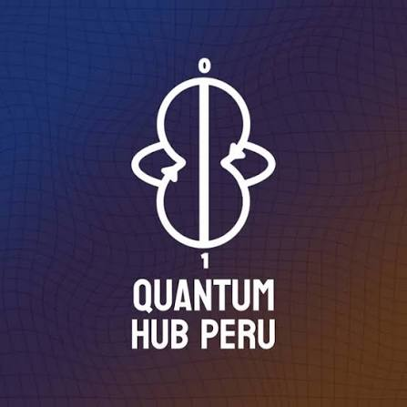
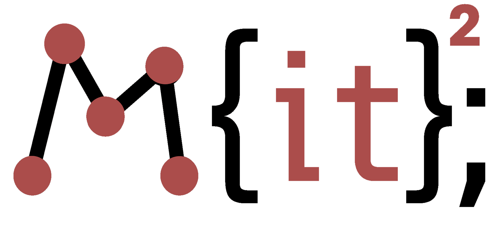

Experience
I am still exploring what makes me interested in computing, but I find my pattern involves psychology and biology. HomeResearch

QuantumHub Perú
Junior Research Assistant (Mar 2026 – Present)
One of two high schoolers in the Quantum Software team. Part of the Visualization subteam.
One of two high schoolers in the Quantum Software team. Part of the Visualization subteam.
Fellow (Sept – Nov 2025)
First high school cohort of the first quantum computing course in Latin America. Ranked third in the entrance exam, worked through three modules:
First high school cohort of the first quantum computing course in Latin America. Ranked third in the entrance exam, worked through three modules:
- QC101: Basics of linear algebra, Dirac notation, Qiskit, and computation theory.
- QC201: Bloch's sphere, quantum gates, entanglement, measurement, quantum circuits.
- QC301: Teleportation, superdense coding, Deutsch-Jozsa, Grover.
Contests
Peruvian Informatics Olympiad
- 2026: Seventh place nationally, Peruvian delegate for the Ibero-American Olympiad in Informatics.
- 2025: Reached national stage.
CodeSprint LA
2026, High School division: 13th place over 100+ participants. Amazing team!
2026, High School division: 13th place over 100+ participants. Amazing team!

MIT Informatics Contest, M(IT)^2
- 2025 Winter: Open Division participant.
- 2026 Spring: Round 2 qualifier.
Programs
Kode With Klossy
- 2026: AI/ML camp
- 2025: Web Development camp
Built Helping Hearts, an informative portal that helps underserved communities access healthcare. Led the wireframing process.
Beaver Works Summer Institute, EdX
Quantum Development Software, Computer Science and Systems, and Python Core; 2026